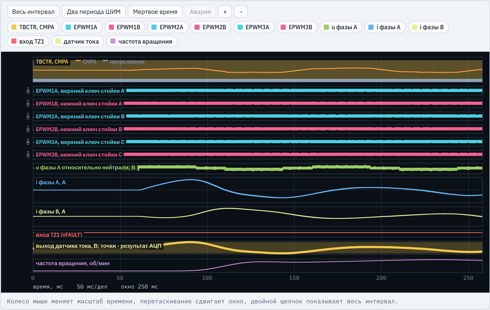
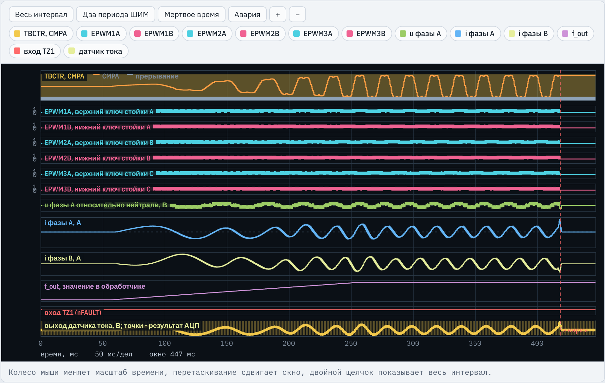
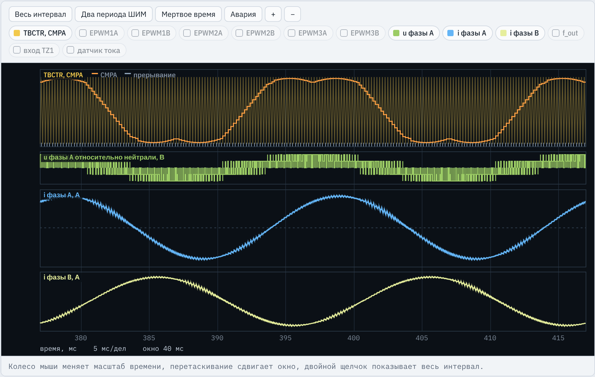
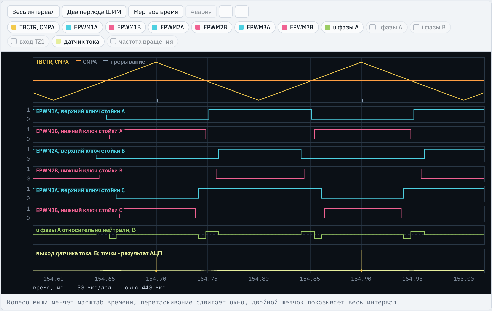
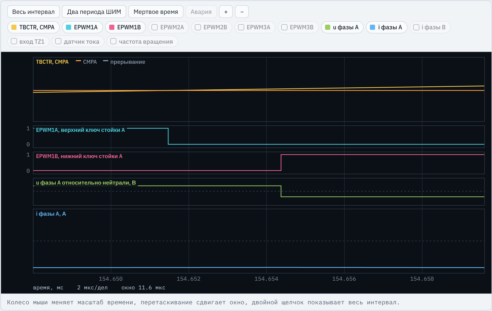
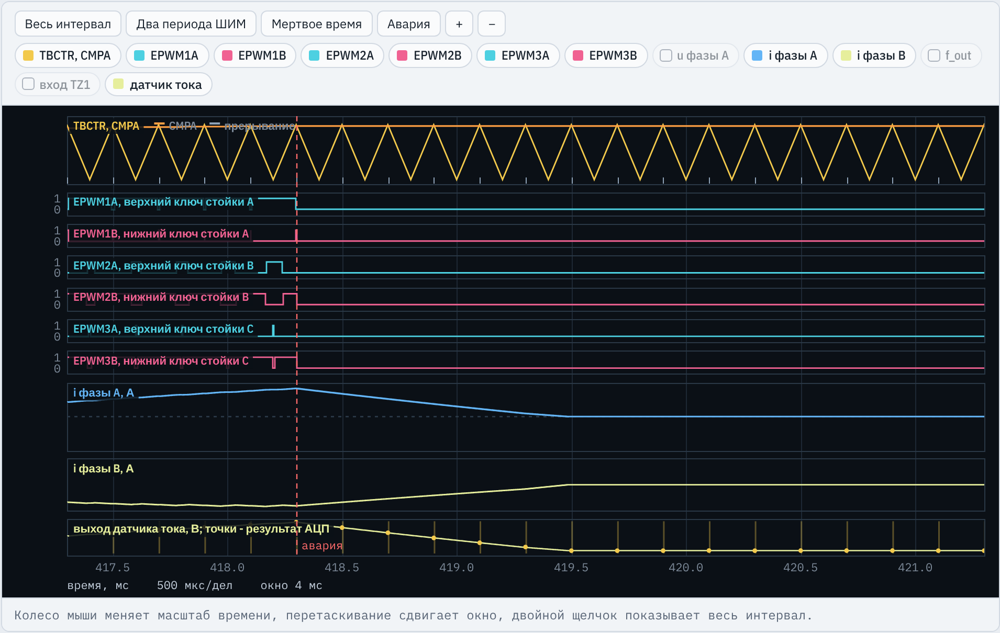

TMS320F2837xD · ЛАБОРАТОРНАЯ РАБОТА № 5
Три синхронные стойки инвертора, два датчика тока, закон U/f с задатчиком интенсивности, векторная ШИМ, компенсация мертвого времени и защита по току
Место работы в курсе
Третья стойка и синхронный пуск трех ePWM
Два преобразования АЦП от одного события
Задатчик интенсивности и закон U/f
Векторная ШИМ (добавка u0)
Компенсация мертвого времени
Защита по току трех фаз
Силовая часть и измерение двух токов переходят дальше в ЛР6–ЛР10.
Стенд C2000 · ЛР5. Частотное управление АД насоса
2 / 24
Инженерная задача
Закон U/f — наиболее распространенный способ регулирования скорости насосов, вентиляторов и компрессоров. Силовая часть: выпрямитель, звено Ud = 580 В, трехфазный инвертор.
Задатчик интенсивности: 250 Гц/с. При скачке частоты ток близок к пусковому, в 4–5 раз выше номинального.
U/f = const сохраняет потокосцепление и перегрузочную способность. U0 = 6 В компенсирует падение на Rs при малой частоте.
Нужно 311,1 В. Синусоидальная ШИМ дает не более Ud/2 = 290 В, векторная — Ud/√3 = 334,9 В.
Мертвое время 2,9 мкс снижает напряжение на 10,7 В: 3 % при 50 Гц, около 16 % при 10 Гц. Нужна компенсация по знаку тока.
Заклинивание насоса: скольжение 1, ток за миллисекунды растет до пускового. Закрыть шесть ключей не позднее двух периодов ШИМ.
Стенд C2000 · ЛР5. Частотное управление АД насоса
3 / 24
Объект управления
Вариант 1: fШИМ = 5 кГц, Ud = 580 В, датчики Холла 66 мВ/А, nFAULT — GPIO14. Обмотки в звезду, нейтраль изолирована.
| Фаза | ePWM и выводы | Датчик и АЦП | Переменные программы | Кнопки каналов осциллографа |
|---|---|---|---|---|
| A | ePWM1: GPIO0 — EPWM1A (верхний ключ), GPIO1 — EPWM1B (нижний) | ADCINA4, SOC0, ADCRESULT0 | na, i_a, ua, da | EPWM1A, EPWM1B, u фазы A, i фазы A, датчик тока; TBCTR, CMPA — ePWM1 |
| B | ePWM2: GPIO2 — EPWM2A, GPIO3 — EPWM2B | ADCINA5, SOC1, ADCRESULT1 | nb, i_b, ub, db | EPWM2A, EPWM2B, i фазы B |
| C | ePWM3: GPIO4 — EPWM3A, GPIO5 — EPWM3B | датчика нет: i_c = -i_a - i_b | i_c, uc, dc | EPWM3A, EPWM3B |
| — | GPIO14 (nFAULT) → INPUT1 → TZ1 трех модулей | запуск: ePWM1 SOCA, TRIGSEL = 5 | f_ref, f_out, u_amp, state | вход TZ1; f_out — переменная работы |
Канал «датчик тока» — выход датчика фазы A в вольтах (1,65 В при нулевом токе), точки на нем — результаты АЦП.
Стенд C2000 · ЛР5. Частотное управление АД насоса
4 / 24
Что делает студент
Данные варианта в #define: мертвое время в тактах, KАЦП, U0, Δf, Kмв; границы ШИМ, ΔUмв, Mдин — в отчет
GPIO0–GPIO5 на EPWM1A…EPWM3B, InitEPwmLeg() для ePWM2 и ePWM3
SOC0 и SOC1 от ePWM1 SOCA, ADCINT1 по окончании SOC1
PwmTrip() и PwmEnable() для трех модулей
Калибровка нуля двух датчиков, i_a, i_b, i_c, отключение по Imax
Задатчик f_ref → f_out, закон U/f → u_amp
Задания ua, ub, uc и добавка u0 = -(max + min)/2
dk с компенсацией мертвого времени, ограничение 0…1, запись CMPA
Результат: протокол приемки 10 из 10 и исследование: синусоидальная ШИМ, Kмв = 0 и обратный знак, без задатчика, время срабатывания защиты.
Стенд C2000 · ЛР5. Частотное управление АД насоса
5 / 24
Заготовка
main() без двух вызовов InitEPwmLeg(), InitFaultInput(), запуск АЦП от ePWM1, интегрирование угла theta, запись CMPA, сброс ADCINT1 и PIEACKInitAdcA() (тактирование и включение АЦП) и InitEPwmLeg() (счетчик, сравнение, мертвое время, TZ)f_ref, f_out, i_a, i_b: стенд записывает f_ref и проверяет по ним программу (И2, И6, И10)DF_RAMP = 0, K_DT = 0) — заглушки, а не данные вариантаОбычный запуск: при t1 = 57 мс стенд записывает f_ref = 10 Гц (как режим B), время 258 мс.
Приемка: режим A — f_ref = 50 Гц, номинальный режим, заклинивание при 417 мс; режим B — 10 Гц. Около минуты.
Стенд C2000 · ЛР5. Частотное управление АД насоса
6 / 24
Структура программы
GPIO, АЦП, PIE; три ePWM при TBCLKSYNC = 0; выходы отключены; пуск счетчиков; пустой цикл
каждые 200 мкс: SOCA при TBCTR = TBPRD → SOC0, SOC1 → прерывание
256 выборок при закрытых ключах → off_a, off_b, PwmEnable()
токи, защита, f_out, u_amp, theta, dk → CMPA
PwmTrip(), выходы больше не включаются
Один вызов обработчика — один период ШИМ: коды АЦП → токи → защита → fout → Um и θ → ua, ub, uc, u0 → dk → CMPA трех модулей.
Расчет начинается, когда оба тока уже измерены, и привязан к периоду ШИМ
Все EPWMxA в нуле — нулевой вектор; ток равен среднему за период, переключения далеко
После аварии state = ST_FAULT, новые CMPA не вычисляются
Стенд C2000 · ЛР5. Частотное управление АД насоса
7 / 24
Задание 1
lr5_reference.c, вариант 1; без расчета: FAULT_GPIO 14, ADC_CH_A 4, ADC_CH_B 5, UD 580, I_MAX 14.6
#define FSW_HZ 5000.0f #define TBPRD_VAL 10000
TBPRD = 100 МГц / (2 · 5 кГц) = 10000: счет вверх-вниз, период 200 мкс
#define DEADBAND_TCK 290 // мертвое время, такты EPWMCLK
#define ACQPS_VAL 452,9 мкс / 10 нс = 290. Окно выборки (45 + 1) · 5 нс = 230 нс ≥ tS
#define HALL_S 0.066f #define CS_POL (1.0f) #define K_ADC (CS_POL * (3.3f / 4096.0f) / HALL_S)
KАЦП = 3,3 / (4096 · 0,066) = 0,01221 А на единицу кода; знак «+»: напряжение растет при токе в двигатель
#define U_BOOST 6.0f
#define T_RAMP 0.20f
// ...
#define DF_RAMP (F_NOM / T_RAMP * TS)U0 = 0,02 · 311,1 ≈ 6 В; Tр = 0,20 с. Δf = 50 / 0,2 · 200 мкс = 0,05 Гц за период, то есть 250 Гц/с
#define K_DT (DEADBAND_TCK * 10.0e-9f * FSW_HZ) #define I_DT (0.01f * I_MAX)
Kмв = 2,9 мкс · 5 кГц = 0,0145 периода; зона около нуля тока Iмв = 0,146 А
Стенд C2000 · ЛР5. Частотное управление АД насоса
8 / 24
Задание 2
InitEPwmGpio(), main()
GpioCtrlRegs.GPAPUD.all |= 0x003F;
Биты 0–5: подтяжка шести выходов ШИМ отключена
GpioCtrlRegs.GPAMUX1.bit.GPIO0 = 1; // EPWM1A, EPWM1B - фаза A GpioCtrlRegs.GPAMUX1.bit.GPIO1 = 1; // ... GPIO2..GPIO5 = 1: фазы B и C
Функция 1 мультиплексора: GPIO0…GPIO5 — EPWM1A, 1B, 2A, 2B, 3A, 3B
CpuSysRegs.PCLKCR0.bit.TBCLKSYNC = 0; // ... InitEPwmLeg(&EPwm1Regs); // фаза A InitEPwmLeg(&EPwm2Regs); // фаза B InitEPwmLeg(&EPwm3Regs); // фаза C
Одна функция настраивает любую стойку через указатель на регистры модуля. Пока TBCLKSYNC = 0, счетчики стоят
PwmTrip();
// ...
CpuSysRegs.PCLKCR0.bit.TBCLKSYNC = 1;Выходы закрыты до конца калибровки (И9). Общий пуск тактирования — три счетчика синхронны без сигнала синхронизации (И1)
Записи в GpioCtrlRegs и CpuSysRegs — между EALLOW и EDIS (проверка И10).
Стенд C2000 · ЛР5. Частотное управление АД насоса
9 / 24
Задания 2 и 4
InitEPwmLeg() — перенесено из ЛР3; PwmTrip(), PwmEnable()
p->AQCTLA.bit.CAU = AQ_CLEAR; p->AQCTLA.bit.CAD = AQ_SET;
Счет вверх-вниз: верхний ключ включен, пока TBCTR < CMPA, d = CMPA/TBPRD
p->DBRED.bit.DBRED = DEADBAND_TCK; p->DBFED.bit.DBFED = DEADBAND_TCK;
EPWMxB — дополнение EPWMxA, оба включения задержаны на 290 тактов
p->TZCTL.bit.TZA = TZ_FORCE_LO; p->TZCTL.bit.TZB = TZ_FORCE_LO; p->TZSEL.bit.OSHT1 = 1;
При отключении оба ключа закрыты; TZ1 (nFAULT драйвера) действует на каждый модуль
EPwm1Regs.TZFRC.bit.OST = 1; EPwm2Regs.TZFRC.bit.OST = 1; EPwm3Regs.TZFRC.bit.OST = 1;
PwmTrip(): закрыть все шесть ключей. Ток идет по трем фазам, одной стойки мало
EPwm1Regs.TZCLR.bit.OST = 1;
// ... то же для ePWM2, ePWM3 и TZCLR.INTPwmEnable(): снять отключение — только после калибровки
Стенд C2000 · ЛР5. Частотное управление АД насоса
10 / 24
Задание 3
main() — дано; InitAdcA()
EPwm1Regs.ETSEL.bit.SOCAEN = 1; EPwm1Regs.ETSEL.bit.SOCASEL = ET_CTR_PRD; EPwm1Regs.ETPS.bit.SOCAPRD = ET_1ST;
Дано: импульс SOCA ePWM1 при TBCTR = TBPRD в каждом периоде
AdcaRegs.ADCSOC0CTL.bit.CHSEL = ADC_CH_A; AdcaRegs.ADCSOC0CTL.bit.ACQPS = ACQPS_VAL; AdcaRegs.ADCSOC0CTL.bit.TRIGSEL = 5;
SOC0: фаза A, ADCINA4, окно 230 нс, запуск от ePWM1 SOCA (код 5)
AdcaRegs.ADCSOC1CTL.bit.CHSEL = ADC_CH_B; AdcaRegs.ADCSOC1CTL.bit.ACQPS = ACQPS_VAL; AdcaRegs.ADCSOC1CTL.bit.TRIGSEL = 5;
SOC1: фаза B, ADCINA5, тот же запуск. Преобразования идут подряд в порядке номеров SOC
AdcaRegs.ADCINTSEL1N2.bit.INT1SEL = 1; AdcaRegs.ADCINTSEL1N2.bit.INT1E = 1; AdcaRegs.ADCINTFLGCLR.bit.ADCINT1 = 1;
ADCINT1 по окончании SOC1 (в ЛР3 было 0): в обработчике готовы оба результата
Начало InitAdcA() — из ЛР3: PRESCALE = 6 (ADCCLK 50 МГц), 12 бит, INTPULSEPOS = 1, ADCPWDNZ = 1, пауза 1 мс.
Стенд C2000 · ЛР5. Частотное управление АД насоса
11 / 24
Задание 5
adca1_isr(): na = ADCRESULT0, nb = ADCRESULT1 — дано
sum_a += na;
sum_b += nb;
if (++cal_cnt >= CAL_N)
// ...
off_a = sum_a / CAL_N; // ... off_b так же
state = ST_RUN;
PwmEnable();Ключи закрыты, ток равен нулю: среднее 256 кодов — код нуля каждого датчика. После этого включить выходы
i_a = ((float)na - off_a) * K_ADC; i_b = ((float)nb - off_b) * K_ADC; i_c = -i_a - i_b;
Код в амперы, как в ЛР2. Ток фазы C вычисляется: нейтраль изолирована, сумма трех токов равна нулю
if (state == ST_RUN && (fabsf(i_a) > I_MAX ||
fabsf(i_b) > I_MAX || fabsf(i_c) > I_MAX ||
na == 0 || na == 4095 || nb == 0 || nb == 4095))
// ...
PwmTrip();
state = ST_FAULT;Модуль тока любой фазы выше 14,6 А или код на границе диапазона (датчик вне диапазона) — закрыть ключи навсегда
Стенд C2000 · ЛР5. Частотное управление АД насоса
12 / 24
Задание 6
adca1_isr(), состояние ST_RUN
if (f_out < f_ref - DF_RAMP) f_out += DF_RAMP; else if (f_out > f_ref + DF_RAMP) f_out -= DF_RAMP; else f_out = f_ref;
Шаг не больше 0,05 Гц за период: 250 Гц/с, до 50 Гц за 0,2 с (И6). Последняя ветка выводит точно на задание
if (f_out <= 0.0f) u_amp = 0.0f;
else if (f_out < F_NOM)
u_amp = U_BOOST + (U_NOM - U_BOOST) * f_out / F_NOM;
else u_amp = U_NOM;10 Гц: 6 + 305,1 · 0,2 = 67,0 В (И5); 50 Гц и выше: 311,1 В (И4); при f = 0 напряжения нет
theta += TWO_PI * f_out * TS; if (theta >= TWO_PI) theta -= TWO_PI;
Дано: угол — интеграл частоты; приведение к 0…2π сохраняет точность float
Стенд записывает f_ref при t1 = 57 мс: 50 Гц в режиме A, 10 Гц в режиме B и при обычном запуске.
Стенд C2000 · ЛР5. Частотное управление АД насоса
13 / 24
Задание 7
adca1_isr(), состояние ST_RUN
ua = u_amp * cosf(theta); ub = u_amp * cosf(theta - 2.0943951f); uc = u_amp * cosf(theta + 2.0943951f);
2,0943951 = 2π/3: фаза B отстает от A на 120°, фаза C — на 240°. Прямой порядок фаз, ротор вращается в положительном направлении (И3)
umax = fmaxf(ua, fmaxf(ub, uc)); umin = fminf(ua, fminf(ub, uc)); u0 = -0.5f * (umax + umin);
Добавка нулевой последовательности центрирует задания: наибольшее и наименьшее равны по модулю. Ограничивается уже размах, не больше √3·Um
u0 одинакова для трех стоек и в фазных напряжениях отсутствует: ukN = ukO − (uaO + ubO + ucO)/3. Граница линейного режима растет с Ud/2 = 290 В до Ud/√3 = 334,9 В (+15,5 %).
Стенд C2000 · ЛР5. Частотное управление АД насоса
14 / 24
Задание 8
adca1_isr(), состояние ST_RUN
i_c = -i_a - i_b;
sa = fminf(fmaxf(i_a / I_DT, -1.0f), 1.0f);
// ... sb, sc так жеsat(i/Iмв): ±1 по знаку тока, линейно в зоне |i| < 0,146 А, где знак недостоверен. i_c пересчитан: при переходе из калибровки первая ветка не выполнялась
da = 0.5f + (ua + u0) / UD + K_DT * sa;
// ... db, dc так же
da = fminf(fmaxf(da, 0.0f), 1.0f);d = 0,5 + (u + u0)/Ud: при d = 0,5 среднее напряжение стойки равно нулю. При i > 0 мертвое время уменьшает напряжение — добавка +0,0145, при i < 0 — наоборот
EPwm1Regs.CMPA.bit.CMPA = (Uint16)(da * TBPRD_VAL); EPwm2Regs.CMPA.bit.CMPA = (Uint16)(db * TBPRD_VAL); EPwm3Regs.CMPA.bit.CMPA = (Uint16)(dc * TBPRD_VAL);
Дано: CMPA = d · 10000; ограничение 0…1 не дает выйти за TBPRD
AdcaRegs.ADCINTFLGCLR.bit.ADCINT1 = 1; PieCtrlRegs.PIEACK.all = PIEACK_GROUP1;
Дано: без сброса флага и подтверждения группы 1 следующего прерывания не будет (И10)
Стенд C2000 · ЛР5. Частотное управление АД насоса
15 / 24
Осциллограф · обычный запуск

TBCTR, CMPA — счетчик ePWM1 (заливка) и CMPA стойки A (оранжевая): меняется с частотой 10 Гц
EPWM1A…EPWM3B — шесть ключей; до 51,1 мс нули — калибровка
u фазы A — напряжение фазы A относительно нейтрали, В
i фазы A, i фазы B — токи, А: после 57 мс бросок при пуске, затем синусоида 10 Гц
вход TZ1 — nFAULT высокий — аварии драйвера нет
датчик тока — выход датчика фазы A, В; точки — коды АЦП
частота вращения — об/мин; к концу около 300 (синхронная при 10 Гц)
Стенд C2000 · ЛР5. Частотное управление АД насоса
16 / 24
Осциллограф · режим A приемки

f_out — выходная частота: от 0 при 57 мс до 50 Гц при 257 мс, прямая 250 Гц/с
TBCTR, CMPA — CMPA стойки A: размах растет по закону U/f, вершины уплощены добавкой u0
u фазы A — фазное напряжение, В
i фазы A, i фазы B — токи, А: при разгоне до 12,1 А, в номинальном режиме 6,6 А
датчик тока — выход датчика фазы A, точки — коды АЦП
Красная штриховая «авария» — отключение после заклинивания при 417 мс. Режим открывается кнопкой «A: пуск, номинальный режим, заклинивание» на вкладке «Приемка».
Стенд C2000 · ЛР5. Частотное управление АД насоса
17 / 24
Осциллограф · режим A, увеличено

TBCTR, CMPA — CMPA стойки A = da · 10000: «седло» с плоскими участками — синусоида плюс u0
u фазы A — импульсы с уровнями 0, ±Ud/3, ±2Ud/3; первая гармоника 310,6 В
i фазы A, i фазы B — синусоиды 50 Гц с пульсациями частоты ШИМ
Максимум тока B наступает примерно через 6,7 мс (треть периода 20 мс) после максимума тока A: фаза B отстает на 120°, порядок фаз прямой (И3).
Стенд C2000 · ЛР5. Частотное управление АД насоса
18 / 24
Осциллограф · обычный запуск, увеличено

TBCTR, CMPA — счетчик 0…10000 за 100 мкс вверх и 100 мкс вниз, CMPA стойки A; метки внизу — вызовы обработчика
EPWM1A…EPWM3B — импульсы трех стоек симметричны относительно вершины TBCTR = TBPRD
u фазы A — короткие импульсы между переключениями стоек
датчик тока — точки — выборки АЦП в вершине счетчика
В вершине счетчика все EPWMxA = 0, включены три нижних ключа — нулевой вектор. В его середине ток равен среднему за период.
Стенд C2000 · ЛР5. Частотное управление АД насоса
19 / 24
Осциллограф · обычный запуск, увеличено

EPWM1A, EPWM1B — верхний ключ выключен при 154,6515 мс, нижний включен при 154,6544 мс: пауза 2,9 мкс
u фазы A — остается высоким всю паузу и падает только с включением нижнего ключа
i фазы A — ток отрицательный (ниже штриховой нулевой линии)
При ia < 0 в паузе проводит диод верхнего ключа: выход подключен к плюсу, напряжение больше заданного. Компенсация уменьшает da на Kмв = 0,0145.
Стенд C2000 · ЛР5. Частотное управление АД насоса
20 / 24
Осциллограф · режим A, авария

TBCTR, CMPA — штриховая «авария» — отключение около 418,3 мс
EPWM1A…EPWM3B — после отключения все шесть выходов в нуле и больше не переключаются
i фазы A, i фазы B — ток растет после заклинивания при 417 мс; после отключения спадает до нуля примерно за 1,2 мс
датчик тока — выборки АЦП продолжаются, программа в состоянии ST_FAULT
По протоколу: все ключи закрыты через 1 мкс после выборки выше 14,6 А (И8 допускает 400 мкс).
Стенд C2000 · ЛР5. Частотное управление АД насоса
21 / 24
Приемочные испытания
| № | Что проверяется | Зачем |
|---|---|---|
| И1 | 5 кГц ±0,1 %, счетчики синхронны, мертвое время 2,9…3,1 мкс в каждой стойке, нет сквозного тока | исправность инвертора и согласованность трех фаз |
| И2 | АЦП при TBCTR = TBPRD, входы ADCINA4 и ADCINA5, окно ≥ 230 нс; погрешность i_a, i_b ≤ 0,5 % (среднее) и 2 % (наибольшая) от 25 А | на токах построены защита и компенсация |
| И3 | 50 Гц ±0,4 %, ток B отстает от тока A на 120° ±5°, ротор вращается вперед | насос не должен вращаться назад |
| И4 | при 50 Гц первая гармоника 311,1 В ±3 %, 3-я гармоника da ≥ 10 % | номинальное напряжение только с векторной ШИМ |
| И5 | при 10 Гц первая гармоника 67,0 В ±5 % | закон U/f и компенсация мертвого времени |
| И6 | темп разгона 250 Гц/с ±5 %, ток не выше 14,6 А | задатчик ограничивает пусковой ток |
| И7 | 1420 ±24 об/мин, амплитуда тока не более 7,28 А | двигатель в номинальной точке |
| И8 | шесть ключей закрыты не позднее 2 периодов после выборки выше 14,6 А и не включаются | заклинивание не разрушает инвертор |
| И9 | выходы закрыты при калибровке, включены до 57 мс, ложных отключений нет | калибровка нуля верна только без тока |
| И10 | EALLOW/EDIS, сброс ADCINT1, PIEACK, переменные f_ref, f_out, i_a, i_b | программа работоспособна на кристалле |
Стенд C2000 · ЛР5. Частотное управление АД насоса
22 / 24
Типовые ошибки
| Ошибка в программе | Результат в эталоне с этой ошибкой | Не пройдены |
|---|---|---|
u0 = 0 (синусоидальная ШИМ) | перемодуляция: 304,4 В при 50 Гц, 3-я гармоника da 2,6 % | И4 |
K_DT = 0 | при 10 Гц 62,4 В (−7,0 %) | И5 |
| обратный знак компенсации | 293,1 В при 50 Гц, 53,6 В при 10 Гц | И4, И5 |
нет задатчика: f_out = f_ref | пусковой ток, отключение защитой при 59,10 мс | И3, И4, И6–И9 |
u_amp = U_NOM на всех частотах | полное напряжение при малой частоте, отключение при 59,10 мс | И3–И9 |
переставлены ub и uc | обратный порядок фаз, −1420 об/мин | И3, И7 |
| нет калибровки нуля | систематическая погрешность 288 и 250 мА | И2 |
нет SOC1 или INT1SEL = 0 | ADCINA5 не оцифровывается, ложное отключение при 51,30 мс | И2–И9 |
Ошибки модуляции и компенсации видны только по напряжению (И4, И5). Ошибки, ведущие к отключению защитой, валят сразу много проверок: искать причину надо по первой из них.
Стенд C2000 · ЛР5. Частотное управление АД насоса
23 / 24
Порядок выполнения
InitAdcA() и InitEPwmLeg()#definei_a, i_b на осциллограф, сравнить с каналами токов фазu0 = 0, K_DT = 0 и обратный знак, Iмв = 0,05 Imax, без задатчика, время срабатывания защитыСтенд C2000 · ЛР5. Частотное управление АД насоса
24 / 24